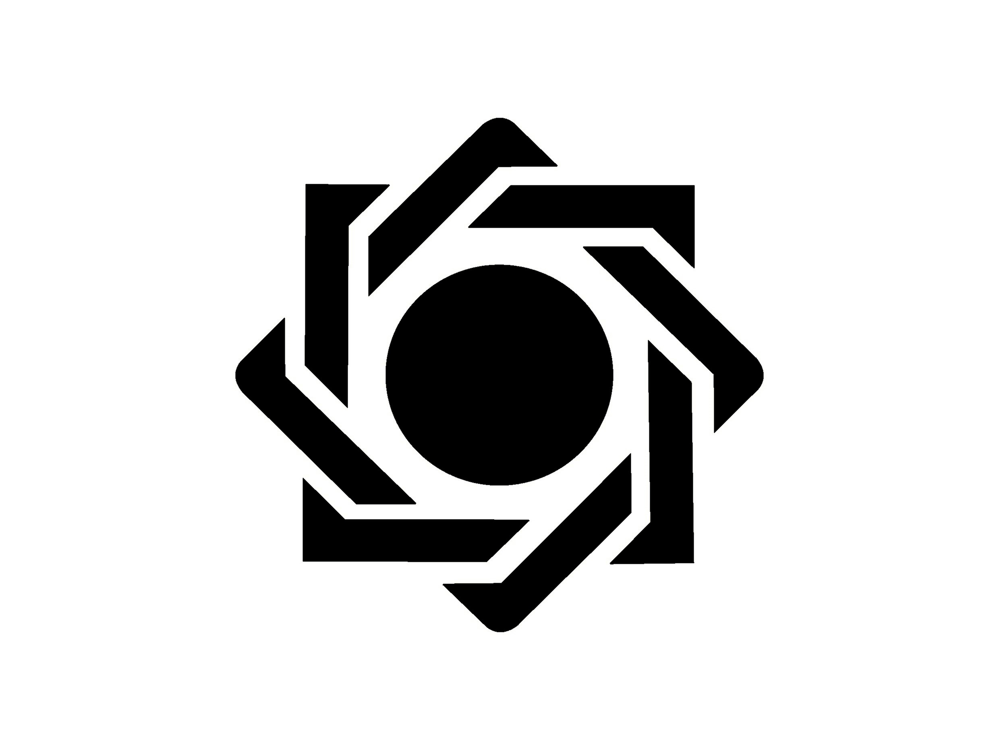
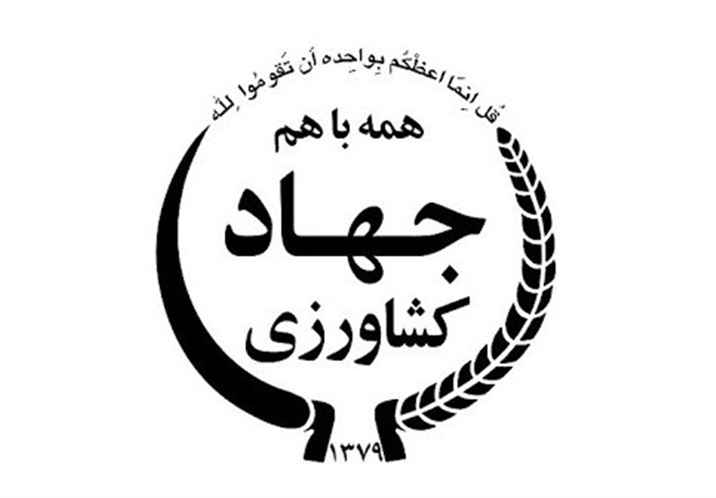

مدیرعامل و بنیانگذار شرکت سرمایهگذاری راه ابریشم نو، یک رهبر آیندهنگر در حوزه سرمایهگذاری و فناوریهای نوین است. با سالها تجربه در مدیریت کسبوکار، تحلیل بازارهای مالی و توسعه استراتژیهای سرمایهگذاری، او توانسته است مسیر روشنی برای رشد و تحول در این صنعت ترسیم کند. با باور به قدرت نوآوری و فناوری، دکتر نداف همواره به دنبال ایجاد فرصتهای جدید برای سرمایهگذاران و توسعه راهکارهای خلاقانه در بازارهای مالی است. تحت هدایت او، راه ابریشم نو به عنوان یکی از پیشگامان سرمایهگذاری هوشمند و پایدار شناخته میشود. چشمانداز او: ایجاد تحول در فضای سرمایهگذاری از طریق استفاده از تکنولوژیهای نوین، تحلیل دادههای پیشرفته و توسعه راهکارهای مالی مبتکرانه. سرمایهگذاری آینده، از امروز آغاز میشود.
شرکت راه ابریشم نو
ساخته شده توسط تیم برنامه نویسی
هلدینگ راه ابریشم نو
مسیر توسعه تحول جهانی

- مهدی : نام
- نداف : نام خانوادگی
- دانشگاه تهران : فارغ تحصیل از
- دکترای مدیریت کسب و کار و دکترای علوم سیاسی : مدرک تحصیلی
- هلدینگ راه ابریشم نو مسیر توسعه تحول جهانی با هدف ایجاد تحولی پایدار در اقتصاد کشور و ارتقای بهرهوری در صنایع کشاورزی، دامپروری و آبزیپروری در آذرماه 1402 تأسیس شد.
این مجموعه با سرمایهای 2000 میلیارد ریالی و نگاهی بلندمدت به آینده، فعالیت خود را آغاز کرد و در مدت کوتاهی توانست با اخذ مجوزهای لازم، به یکی از بازیگران اصلی در تأمین نهادههای دامی کشور تبدیل شود.
ما در راه ابریشم نو باور داریم که امنیت غذایی، یکی از حیاتیترین نیازهای جوامع مدرن است و تلاش کردهایم با ایجاد زنجیرههای ارزش در صنایع مرتبط، این نیاز را با بالاترین کیفیت پاسخ دهیم.
از تولید محصولات دانشبنیان مانند کیتوزان و خوراک طیور پروبیوتیک گرفته تا طراحی و اجرای پروژههای نوآورانه با استفاده از فناوریهای پیشرفته، همگی در راستای این هدف بزرگ بودهاند. - چشمانداز ما فراتر از مرزهای کشور است. ما در تلاشیم تا با توسعه همکاریهای بینالمللی، از جمله شراکت با مجموعههایی همچون CP Group ، دانش و فناوری روز دنیا را به کشور وارد کنیم و ایران را به قطبی برجسته در تولید محصولات کشاورزی و دامی در منطقه تبدیل کنیم.
- هدف ما تنها تولید بیشتر نیست؛ بلکه بهبود کیفیت محصولات، کاهش ضایعات، و افزایش بهرهوری در تمامی مراحل زنجیره تولید است.
این رویکرد ما را قادر میسازد تا نهتنها نیازهای داخلی را به بهترین شکل ممکن برآورده کنیم، بلکه در بازارهای جهانی نیز حضوری پررنگ داشته باشیم. - ارزشهای سازمانی هلدینگ راه ابریشم نو
- 1. نوآوری و فناوریمحوری: در دنیای امروز، نوآوری کلید پیشرفت است. ما در راه ابریشم نو همواره به دنبال استفاده از جدیدترین فناوریها و راهکارهای خلاقانه برای حل چالشهای پیشروی صنایع کشاورزی و دامپروری هستیم.
- 2. تعهد به پایداری: پایداری محیطزیست و توسعه پایدار، از ارزشهای بنیادین ماست. تمامی فعالیتهای ما با هدف حفظ منابع طبیعی و حمایت از نسلهای آینده طراحی و اجرا میشوند.
- 3. استفاده از ظرفیتهای داخلی: ما به تواناییها و دانش نخبگان ایرانی باور داریم و تلاش میکنیم بستری برای رشد استعدادهای داخلی فراهم کنیم. همکاری با دانشگاهها، مراکز تحقیقاتی، و کارآفرینان جوان، یکی از اولویتهای ماست.
- 4. همکاریهای بینالمللی: هلدینگ راه ابریشم نو معتقد است که پیشرفت در گرو تعامل و همکاری جهانی است. ما با شرکای بینالمللی خود بهدنبال انتقال دانش، توسعه زیرساختها و ایجاد فرصتهای جدید هستیم.
- 5. توجه به مشتریان و ذینفعان: رضایت مشتریان و ارزشآفرینی برای ذینفعان، محور اصلی تمامی تصمیمات و فعالیتهای ماست.
-
ماموریت اصلی شرکت راه ابریشم نو، ایجاد ارزش افزوده و تأمین نیازهای مشتریان از طریق ارائه خدمات نوآورانه و موثر در حوزههای مختلف است.
- فعالیت در زنجیره ارزش دام و طیور با هدف تولید و تأمین خوراک دام و طیور و توسعه بخشهای مرتبط
- پایگاه خبری اختصاصی در صنعت دام طیور و آبزیان جهت آگاهیرسانی و تحلیل روندهای بازار
- فروشگاه اینترنتی "من مارکت" برای تأمین مستقیم کالا و خدمات
- پلتفرم تامین مالی اعتبار من برای فروش اقساطی کالا و خدمات
- آژانس گردشگری تخصصی جهت برگزاری تورهای کسبوکار داخلی و بینالمللی برای توسعه ارتباطات و فرصتهای تجاری
- ما با اتکا به توانمندیهای انسانی و استفاده از فنآوریهای نوین، به دنبال بهبود مستمر، توسعه پایدار و ارائه بهترین خدمات و محصولات به مشتریان خود در تمامی بازارها هستیم
این خدمات شامل:
-
3
تعداد پروژه تکمیل شده -
3000 ملیارد
Lines of Code -
6
تعداد پروژه های در دست اقدام -
61%
تامین سرمایه شده
-

-

-
-
-
-
-
-
-
-
-
مهندس اصغر اعیانی ثانی
نایب رئیس هیئت مدیره -
مهندس امین اعیانی ثانی
رئیس هیت مدیره -
دکتر مهدی نداف
مدیر عامل و عضو هیئت مدیره
-
کارخانه خوراک دام
- سرمایه : 000 .000 .000 . 600 .1
- شهر : سبزوار
- مجوز : وزارت جهاد کشاورزی
-
پرورش مرغ مادر
- سرمایه : 000 .000 . 000 .1
- محدوده : شهرستان سبزوار
- مجوز ها : وزارت جهاد کشاورزی
-
فروشگاه اینترنتی من مارکت
- سرمایه : 000 .000 . 000 .9
- محدوده : شهر تهران
- مجوز ها : دبیر خانه هیئت عالی نظارت برسازمان های صنفی کشور
-
تامین مالی اعتبار من
- سرمایه : 000 .000 . 000 .30
- محدوده : شهر تهران
- مجوز ها : انجمن صنفی کارفرمایی فناوری های نوین مالی ( فین تک )
-
آرژانس گردشگری من تریپ
- سرمایه : 000 .000 . 000 .3
- محدوده : شهر تهران
- مجوزها : وزارت میراث فرهنگی گردشگری و صنایع دستی ایران
-
تامین و عرضه نهاد های دامی
- سرمایه : 000 . 000 .000 . 000 .1
- محدوده : سراسر کشور
- مجوزها : وزارت جهاد کشاورزی
-
پالایشگاه دام سبک و سنگین
- سرمایه : 000 .000 .000 . 000 .3
- محدوده : خراسان شمالی
- مجوزها : وزارت جهاد کشاورزی
-
پالایشگاه گیاهان دارویی
- سرمایه : 000 .000 .000 . 000 .1
- محدوده : داورزن
- مجوزها : وزارت جهاد کشاورزی
-
مجموعه مرغ تخم گذار
- سرمایه : 000 .000 . 000 .000 .10
- محدوده : خراسان رضوی
- مجوزها : وزارت جهاد کشاورزی
-
معرفی فروشگاه اینترنتی " من مارکت "
فروشگاه اینترنتی " من مارکت " یک پلتفرم پیشرفته و کاربرپسند است که به شما این امکان را میدهد تا خریدهای دیجیتال خود را به راحتی و با اطمینان کامل انجام دهید. ما در " من مارکت " مجموعهای از گالریهای دیجیتال متنوع را ارائه میدهیم که شامل انواع محصولات الکترونیکی، نرمافزارها، و خدمات دیجیتال میشود.
ویژگیهای برتر " من مارکت " :
فروش نقد و اقساط: یکی از ویژگیهای منحصر به فرد " من مارکت " این است که به مشتریان خود این امکان را میدهد که کالاهای دیجیتال را هم به صورت نقدی و هم اقساطی خریداری کنند. این قابلیت به شما این فرصت را میدهد تا با شرایط مناسبتر و مطابق با توان مالی خود خرید کنید.
کیفیت و اصالت محصولات: تمامی محصولات عرضهشده در " من مارکت " از کیفیت و اصالت بالایی برخوردار هستند و به شما اطمینان میدهند که خریدی مطمئن و بدون دغدغه خواهید داشت.
تنوع محصولات: " من مارکت " انواع گالریهای دیجیتال را از برندهای معتبر جهانی و داخلی ارائه میدهد. از لپتاپها، گوشیهای موبایل، تبلتها، نرمافزارهای تخصصی و بازیهای دیجیتال گرفته تا تجهیزات جانبی و محصولات دیگر، همه در دسترس شما هستند.
راحتی و امنیت در خرید: با یک تجربه خرید آنلاین ساده و راحت، شما میتوانید به راحتی وارد سایت " من مارکت " شوید و محصول مورد نظر خود را انتخاب کنید. تیم پشتیبانی 24 ساعته ما آماده است تا در صورت نیاز، به شما کمک کند و تجربه خریدی امن و راحت را برای شما فراهم آورد.
پرداخت امن: شما میتوانید با استفاده از روشهای مختلف پرداخت آنلاین، خرید خود را انجام دهید. همچنین در صورت خرید اقساطی، شرایط پرداخت به صورت ساده و شفاف توضیح داده میشود تا هیچ ابهامی برای شما باقی نماند.
اگر به دنبال خرید محصولات دیجیتال با بهترین قیمتها و شرایط انعطافپذیر هستید، " من مارکت " انتخابی عالی برای شماست. با اعتماد به ما، خریدی آسان، سریع و مطمئن را تجربه کنید.
-
معرفی پلتفرم مالی " اعتبار من "
پلتفرم مالی " اعتبار من " یک راهکار نوین و پیشرفته برای تسهیل دسترسی به خدمات مالی و تامین مالی است. این پلتفرم به شما کمک میکند تا به راحتی و با کمترین هزینه، کالاها و خدمات مورد نیاز خود را به صورت اقساطی خریداری کنید. " اعتبار من " خدمات مالی متنوعی از جمله معرفی و دسترسی به خدمات بانکها، فینتکها و لیزینگها را به شما ارائه میدهد تا بتوانید با شرایطی آسان و شفاف، خرید خود را به انجام برسانید.
ویژگیهای برجسته پلتفرم " اعتبار من " :
تامین مالی برای خرید اقساطی کالا و خدمات: با استفاده از پلتفرم " اعتبار من "، میتوانید به راحتی برای خرید انواع کالا و خدمات مورد نیاز خود از جمله لوازم خانگی، تجهیزات الکترونیکی، خودرو، خدمات درمانی و بسیاری دیگر، تأمین مالی انجام دهید. این پلتفرم شرایطی انعطافپذیر برای پرداخت اقساطی به شما ارائه میدهد.
کمترین کارمزد و سود بانکی: در " اعتبار من "، ما به شما این امکان را میدهیم که از خدمات تامین مالی با کمترین کارمزد و سود بانکی بهرهمند شوید. این ویژگی باعث میشود که شما هزینههای اضافی را کاهش داده و با شرایط مالی بهتری خرید کنید.
قرضالحسنه و خدمات شفاف: در " اعتبار من "، ما بهویژه به افرادی که به دنبال قرضالحسنه هستند، خدمات ویژهای ارائه میدهیم. با شرایط کاملاً شفاف و بدون پیچیدگی، میتوانید از خدمات قرضالحسنه بهرهمند شوید و به راحتی اقساط خود را پرداخت کنید.
دسترسی به خدمات مالی متنوع : پلتفرم " اعتبار من " با همکاری بانکها، فینتکها و شرکتهای لیزینگ معتبر، به شما این امکان را میدهد تا از انواع خدمات مالی از جمله اعتبارسنجی، تامین مالی خرید اقساطی، و مشاوره مالی بهرهمند شوید. این امکان به شما کمک میکند که بهترین گزینههای مالی را با توجه به نیاز و تواناییهای خود انتخاب کنید.
ساده و کاربرپسند : فرآیند ثبتنام، درخواست و دریافت خدمات در " اعتبار من " بسیار ساده و سریع است. شما میتوانید با چند کلیک ساده از خدمات مختلف پلتفرم بهرهمند شوید و به راحتی خرید خود را انجام دهید.
چرا " اعتبار من " ؟
پلتفرم مالی " اعتبار من " به عنوان یک پل ارتباطی میان مشتریان و خدمات مالی معتبر، راهکارهای جامع و مناسبی برای تأمین مالی اقساطی با شرایط ویژه و شفاف ارائه میدهد. با کمترین سود بانکی و کارمزد، میتوانید کالاها و خدمات مورد نظر خود را بدون نگرانی از هزینههای اضافی و پیچیدگیهای مالی خریداری کنید.
همچنین، فرآیند قرضالحسنه ما به شما این امکان را میدهد که به صورت کاملاً انسانی و با شرایط آسانتر از دیگر روشهای تأمین مالی بهرهمند شوید.
اگر به دنبال راهی ساده، سریع و مقرون به صرفه برای تامین مالی اقساطی کالا و خدمات خود هستید، پلتفرم مالی " اعتبار من " انتخابی مناسب و قابل اعتماد برای شماست.
-
معرفی " من تریپ " – آرژانس گردشگری تخصصی با تورهای نمایشگاهی
" من تریپ " یک آژانس گردشگری تخصصی است که با ارائه تورهای نمایشگاهی داخلی و بینالمللی، فرصتهای بینظیری را برای کسانی که به دنبال شرکت در نمایشگاههای تجاری، صنعتی و تخصصی هستند، فراهم میآورد. ما در " من تریپ " با ارائه خدمات منحصر به فرد و حرفهای، تجربهای فراموشنشدنی از سفرهای تجاری و نمایشگاهی را به شما ارائه میدهیم.
ویژگیهای برتر " من تریپ " :
تورهای تخصصی نمایشگاهی داخلی و بینالمللی : " من تریپ " تورهایی ویژه برای شرکت در نمایشگاههای مختلف در داخل کشور و در سطح بینالمللی برگزار میکند. شما میتوانید در نمایشگاههای تخصصی مرتبط با صنعت خود حضور پیدا کنید و فرصتهای تجاری جدیدی را کشف کنید.
شرایط پرداخت اقساطی: یکی از ویژگیهای برجسته " من تریپ " این است که تمامی تورهای نمایشگاهی را با شرایط اقساطی مناسب و شفاف ارائه میدهد. این امکان به شما این اجازه را میدهد که بدون نگرانی از هزینههای سنگین، به راحتی از خدمات ما استفاده کنید و تجربهای منحصر به فرد از شرکت در نمایشگاههای تخصصی داشته باشید.
خدمات کامل و حرفهای: ما در " من تریپ " تمامی نیازهای شما را از جمله رزرو بلیط هواپیما، اقامت در هتلهای معتبر، ترانسفر فرودگاهی، راهنمایان حرفهای و برنامهریزی دقیق سفر را پوشش میدهیم. شما میتوانید با آرامش خاطر تنها روی هدف اصلی خود، یعنی حضور در نمایشگاه و انجام کارهای تجاری، تمرکز کنید.
پشتیبانی و مشاوره : تیم حرفهای ما در تمام مراحل سفر همراه شماست و از زمان رزرو تور تا پایان سفر، شما را پشتیبانی میکند. همچنین، قبل از سفر، مشاورههای تخصصی در زمینه نحوه حضور در نمایشگاهها، نحوه برخورد با غرفهداران و چگونگی بهرهبرداری حداکثری از نمایشگاهها به شما ارائه میدهیم.
تنوع تورها : با توجه به نیازهای مختلف شما، " من تریپ " تورهای متنوعی را برای نمایشگاههای مختلف در سراسر جهان برگزار میکند. از نمایشگاههای فناوری، صنعت، خودرو، لوازم خانگی گرفته تا نمایشگاههای تجاری و هنری، ما تورهایی متناسب با سلایق و نیازهای شما داریم.
چرا " من تریپ " ؟
اگر به دنبال شرکت در نمایشگاههای بینالمللی یا داخلی هستید و میخواهید از تجربهای حرفهای و راحت بهرهمند شوید، " من تریپ " انتخابی مناسب برای شماست. با شرایط پرداخت اقساطی و خدمات کامل، شما میتوانید بدون نگرانی از هزینهها، در رویدادهای مهم تجاری شرکت کرده و فرصتهای جدیدی را در سطح جهانی کشف کنید.
در " من تریپ " ما باور داریم که سفرهای تجاری و نمایشگاهی باید برای شما ساده، کارآمد و بدون استرس باشد. از این رو، تمامی تلاش خود را میکنیم تا شما تجربهای بینظیر و حرفهای از شرکت در نمایشگاهها داشته باشید.
-
با رشد جمعیت و افزایش تقاضا برای محصولات پروتئینی، صنعت پرورش طیور به یکی از ارکان مهم تأمین امنیت غذایی کشور تبدیل شده است. در این میان، تأمین جوجه یکروزه باکیفیت و مقاوم، تأثیر مستقیمی بر عملکرد مزارع پرورش مرغ گوشتی و تخمگذار دارد. "بزرگترین مزرعه مرغ مادر و تولید جوجه یکروزه کشور در خوشاب" یک پروژه ملی و استراتژیک است که با هدف تأمین نیاز داخلی و توسعه ظرفیت صادراتی کشور طراحی شده است. این مزرعه در شهرک صنعتی شهرستان خوشاب احداث خواهد شد و با بهرهگیری از دانش فنی روز و زیرساختهای پیشرفته، نقش مهمی در تأمین زنجیره تولید گوشت مرغ و تخممرغ کشور ایفا خواهد کرد.
ضرورت و اهمیت طرح
ایران یکی از بزرگترین تولیدکنندگان گوشت مرغ در منطقه است، اما تأمین جوجه یکروزه باکیفیت همواره یکی از چالشهای اساسی این صنعت بوده است. وابستگی برخی مزارع به واردات جوجه یکروزه و نوسانات قیمتی، تولیدکنندگان را با مشکلات متعددی مواجه کرده است. در این شرایط، احداث مزرعهای بزرگ و مدرن برای تولید جوجه یکروزه مقاوم، سالم و استاندارد، نهتنها نیاز داخلی را تأمین میکند، بلکه امکان توسعه صادرات به کشورهای منطقه را نیز فراهم میسازد.
مزایای اجرای این پروژه:
1. کاهش وابستگی به واردات جوجه یکروزه و تأمین نیاز مزارع داخلی
2. افزایش بهرهوری صنعت طیور از طریق تولید جوجههای مقاوم و استاندارد
3. ایجاد اشتغال پایدار در منطقه خوشاب و توسعه اقتصادی محلی
4. افزایش توان رقابتی ایران در بازارهای منطقهای و بینالمللی
5. بهبود امنیت غذایی کشور و کاهش نوسانات بازار مرغ و تخممرغ
اهداف پروژه
اهداف کوتاهمدت:
1. احداث یک مجموعه مدرن و صنعتی برای پرورش مرغ مادر
2. تجهیز مزرعه به سیستمهای پیشرفته کنترل شرایط محیطی و بهداشتی
3. تولید جوجه یکروزه با نژادهای اصلاحشده و مقاوم در برابر بیماریها
4. راهاندازی آزمایشگاه کنترل کیفیت و سیستمهای مدیریت ژنتیکی برای بهبود عملکرد گلههای مادر
اهداف بلند مدت:
1. تأمین حدود 30 درصد از نیاز داخلی به جوجه یکروزه
2. توسعه ظرفیت صادرات جوجه یکروزه به کشورهای منطقه مانند عراق، افغانستان، ترکمنستان و سایر کشورهای حاشیه خلیج فارس
3. کاهش هزینههای تولید گوشت مرغ و تخممرغ از طریق افزایش کیفیت جوجههای تولیدی
4. ایجاد یک زنجیره پایدار تولید شامل مزرعه مرغ مادر، واحد جوجهکشی، و کارخانه تولید خوراک اختصاصی
5. مشارکت در تحقیقات اصلاح نژاد و توسعه سویههای جدید طیور برای بهبود عملکرد و کاهش مصرف دان
فرآیند مرغ های مشخصات فنی پروژه
ظرفیت تولید:
1. بیش از 500 هزار قطعه مرغ مادر در دوره
2. تولید سالانه حدود 100 میلیون قطعه جوجه یکروزه
زیرساختهای پروژه:
1. زمین مورد نیاز: بیش از 20 هکتار زمین در شهرک صنعتی خوشاب
2. سالنهای پرورش: چندین سالن مجهز به سیستمهای تهویه، گرمایش و سرمایش هوشمند
3. واحدهای جوجهکشی: با ظرفیت تولید بالا و استفاده از دستگاههای پیشرفته هچری
4. آزمایشگاه ژنتیک و کنترل کیفیت: برای پایش سلامت و بهبود ویژگیهای نژادی مرغهای مادر
5. بخش مدیریت و آموزش: جهت تربیت نیروی متخصص در زمینه مدیریت پرورش طیور
فناوریهای مورد استفاده
1. سیستمهای اتوماسیون: استفاده از سیستمهای خودکار برای کنترل دما، رطوبت و تهویه در سالنهای پرورش
2. دستگاههای جوجهکشی پیشرفته: این دستگاهها با دقت بالا، شرایط بهینه برای رشد جنین را فراهم میکنند
3. مدیریت هوشمند: استفاده از نرمافزارهای مدیریتی برای نظارت بر عملکرد مرغهای مادر و جوجهها
4. فناوریهای زیستمحیطی: سیستمهای تصفیه هوا و مدیریت پسماند برای کاهش آلایندگی
فرآیند تولید جوجه یک روزه
تولید جوجه یکروزه یک فرآیند چندمرحلهای است که از انتخاب مرغهای مادر تا انتقال جوجهها به بازار ادامه دارد.
1. انتخاب و پرورش مرغهای مادر:
انتخاب نژادهای با عملکرد بالا، مقاومت ژنتیکی مناسب و راندمان تولیدی برتر
پرورش مرغهای مادر در شرایط کاملاً استاندارد و نظارتشده
تنظیم برنامههای تغذیهای و بهداشتی برای بهبود کیفیت تخمهای نطفهدار
2. جمعآوری و ذخیرهسازی تخمهای نطفهدار:
جمعآوری روزانه تخمهای نطفهدار از سالنهای مرغ مادر
ذخیرهسازی در شرایط استاندارد دما و رطوبت برای حفظ قابلیت جوجهکشی
3. فرآیند جوجهکشی:
قرار دادن تخمهای نطفهدار در دستگاههای ستر و هچر
کنترل دما، رطوبت و تهویه برای افزایش درصد جوجهدرآوری
پایش سلامت و کیفیت جوجهها قبل از انتقال به بازار
4. انتقال و توزیع جوجههای یکروزه:
بستهبندی استاندارد و حملونقل جوجهها به مزارع پرورش گوشتی و تخمگذار
ارائه تضمین کیفیت برای اطمینان از سلامت و عملکرد مناسب جوجهها
تحلیل بازار و رقابت
با توجه به افزایش تقاضا برای گوشت مرغ و تخممرغ، تولید جوجه یکروزه از اهمیت ویژهای برخوردار است.
در حال حاضر، بسیاری از مزارع داخلی وابسته به تولیدکنندگان محدود داخلی یا واردات هستند که این وابستگی مشکلاتی از قبیل نوسانات قیمت و محدودیتهای بهداشتی را ایجاد کرده است.
مزیتهای رقابتی مزرعه خوشاب:
1. استفاده از نژادهای اصلاحشده و مقاوم در برابر بیماریها
2. افزایش ظرفیت تولید و پاسخگویی به نیاز داخلی و صادراتی
3. بهرهگیری از فناوریهای پیشرفته جوجهکشی و کاهش تلفات
4. کنترل کیفیت و نظارت بهداشتی دقیق برای افزایش راندمان جوجههای تولیدی
مزایای اقتصادی و اشتغالزایی
1. اشتغال مستقیم برای بیش از 100 نفر در بخشهای تولید، جوجهکشی و مدیریت
2. اشتغال غیرمستقیم برای بیش از 500 نفر در بخشهای حملونقل، توزیع و فروش
3. افزایش بهرهوری صنعت مرغداری کشور و کاهش هزینههای تولید
4. حفظ و تقویت جایگاه ایران در بازارهای منطقهای
چالش ها و راهکارها
1. کنترل بیماریها: احداث قرنطینههای استاندارد و پایش دقیق سلامت گلهها
2. تأمین نهادههای دامی: تولید بخشی از خوراک طیور در زنجیره تأمین داخلی
3. نوسانات بازار: انعقاد قراردادهای پایدار با تولیدکنندگان داخلی و خارجی
نتیجه گیری
پروژه "بزرگترین مزرعه مرغ مادر و جوجه یکروزه کشور در خوشاب" یکی از مهمترین گامها در توسعه صنعت طیور ایران است. با احداث این مزرعه، ظرفیت تولید جوجه یکروزه به میزان قابلتوجهی افزایش یافته و نیاز داخلی بهطور کامل تأمین خواهد شد. علاوه بر این، ظرفیت صادراتی کشور تقویت شده و ایران میتواند به یکی از صادرکنندگان بزرگ منطقه در حوزه جوجه یکروزه تبدیل شود.
1. افزایش بهرهوری در صنعت طیور
2. ایجاد اشتغال پایدار
3. کاهش وابستگی به واردات
4. توسعه صادرات و ارزآوری برای کشور
اجرای این پروژه، تحولی اساسی در صنعت مرغداری ایران ایجاد کرده و امنیت غذایی کشور را بیشازپیش تقویت خواهد کرد.
-
با افزایش جمعیت و تغییر سبک زندگی، نیاز به تأمین پایدار و بهداشتی گوشت قرمز و فرآوردههای جانبی دام بیش از پیش احساس میشود. در این راستا، ایجاد یک پالایشگاه دام سبک و سنگین با ظرفیت ۱۰۰۰ رأس دام سبک و ۱۰۰ رأس دام سنگین، گامی مهم در جهت بهینهسازی زنجیره تولید گوشت، کاهش ضایعات، بهرهوری بالاتر و استفاده حداکثری از فرآوردههای دامی خواهد بود.
این پالایشگاه علاوه بر کشتار و بستهبندی گوشت، دارای واحدهای تخصصی قطعهبندی و بستهبندی، تولید ژلاتین استخوانی، فرآوری خون و پلاسما، تولید نخ بخیه از روده، فرآوری پوست و پشم و تولید سوسیس و کالباس است. این طرح نوآورانه با بهرهگیری از فناوریهای مدرن، استانداردهای بهداشتی و روشهای نوین مدیریت صنعتی، نقش مهمی در افزایش بهرهوری صنعت دامپروری و کاهش وابستگی کشور به واردات محصولات جانبی دامی خواهد داشت.
۱. ضرورت راهاندازی پالایشگاه دام سبک و سنگین
بهبود زنجیره تأمین گوشت و فرآوردههای جانبی دامی
استفاده بهینه از ضایعات و تبدیل آنها به محصولات ارزشمند
کاهش وابستگی کشور به واردات ژلاتین، پودر خون، نخ بخیه و سایر فرآوردههای دامی
افزایش بهرهوری اقتصادی دامپروری از طریق فرآوری کامل دام
افزایش اشتغالزایی و توسعه صنعتی در منطقه
در حال حاضر، بسیاری از ضایعات دامی در ایران بدون فرآوری مناسب دور ریخته میشوند، در حالی که در کشورهای توسعهیافته از این مواد برای تولید محصولات با ارزش افزوده بالا مانند ژلاتین، نخ بخیه، پودر خون و سوسیس و کالباس استفاده میشود. پالایشگاه دام با ایجاد یک چرخه کامل تولید، تمامی بخشهای دام را به فرآوردههای ارزشمند تبدیل میکند.
۲. ظرفیت و بخشهای مختلف پالایشگاه
ظرفیت تولید:
کشتار و فرآوری روزانه ۱۰۰۰ رأس دام سبک و ۱۰۰ رأس دام سنگین
ظرفیت سالانه تولید گوشت: بیش از ۲۰ هزار تن
تولید محصولات جانبی با ارزش افزوده بالا از ضایعات دامی
بخشهای اصلی پالایشگاه:
1. واحد قطعهبندی و بستهبندی گوشت
2. واحد استخوانگیری و تولید ژلاتین استخوانی
3. واحد فرآوری خون: تولید پلاسما و پودر خون
4. واحد فرآوری روده: تولید نخ بخیه پزشکی
5. واحد تولید سوسیس و کالباس
6. واحد فرآوری پوست و پشم
۳. جزئیات فرآوری در بخشهای مختلف پالایشگاه
۳.۱. واحد قطعهبندی و بستهبندی گوشت
. تفکیک لاشه و بستهبندی بهداشتی گوشت قرمز
افزایش ماندگاری گوشت از طریق بستهبندی در خلا (Vacuum Packaging)
ایجاد ارزش افزوده از طریق عرضه گوشت در بستهبندیهای متنوع برای بازار داخلی و صادرات
۳.۲. واحد استخوانگیری و تولید ژلاتین استخوانی
. فرآوری استخوان دام و تبدیل آن به ژلاتین خوراکی و صنعتی
استفاده در صنایع غذایی (دسرها، شیرینیجات) و دارویی (کپسولهای ژلاتینی)
جایگزینی واردات ژلاتین با تولید داخلی
۳.۳. واحد فرآوری خون: تولید پلاسما و پودر خون
استخراج پلاسما از خون دام برای استفاده در صنایع دارویی و غذایی
تولید پودر خون برای استفاده در خوراک دام و طیور (منبع پروتئینی غنی)
۳.۴. واحد فرآوری روده: تولید نخ بخیه پزشکی
فرآوری روده دام و تبدیل آن به نخ بخیه طبیعی برای مصارف پزشکی
جایگزینی واردات نخ بخیه طبیعی و توسعه صنعت تجهیزات پزشکی
۳.۵. واحد تولید سوسیس و کالباس
استفاده از گوشت قرمز برای تولید فرآوردههای گوشتی فرآوریشده
استانداردهای بهداشتی بالا و تولید محصولات بدون مواد نگهدارنده مضر
۳.۶. واحد فرآوری پوست و پشم
تبدیل پوست دام به چرم طبیعی برای صنایع کیف، کفش و پوشاک
فرآوری پشم برای استفاده در صنایع نساجی و تولید نخ
۴. مزایای اقتصادی و صنعتی پالایشگاه دام
۴.۱. کاهش ضایعات و افزایش بهرهوری
تبدیل تمام اجزای دام به محصولات قابل فروش، کاهش هدررفت منابع
افزایش درآمد دامداران از طریق فرآوری کامل دام
۴.۲. کاهش وابستگی به واردات و توسعه صادرات
جایگزینی واردات ژلاتین، پودر خون، نخ بخیه و چرم فرآوریشده
افزایش صادرات فرآوردههای گوشتی بستهبندیشده
۴.۳. ایجاد اشتغال و توسعه منطقهای
اشتغالزایی مستقیم و غیرمستقیم برای صدها نفر در منطقه
توسعه صنعت فرآوری دام در کشور
۵. چالشهای احتمالی و راهکارها
چالشها:
مشکلات تأمین دام زنده برای کشتار روزانه
نیاز به سرمایهگذاری اولیه بالا برای راهاندازی پالایشگاه
توسعه بازارهای صادراتی برای فرآوردههای جانبی دامی
راهکارها:
ایجاد زنجیره تأمین دام سبک و سنگین از دامداران داخلی
جذب سرمایهگذاری دولتی و خصوصی برای تأمین مالی پروژه
بازاریابی بینالمللی و همکاری با شرکتهای صادرکننده
نتیجه گیری
پالایشگاه دام سبک و سنگین با ظرفیت ۱۰۰۰ رأس دام سبک و ۱۰۰ رأس دام سنگین، یک پروژه ملی در راستای مدرنسازی صنعت دامپروری، افزایش بهرهوری و کاهش ضایعات دامی محسوب میشود. تولید فرآوردههای جانبی با ارزش افزوده بالا مانند ژلاتین، نخ بخیه، پودر خون، چرم و سوسیس و کالباس، نهتنها بازار داخلی را تأمین میکند بلکه ظرفیت بالایی برای صادرات دارد.
این پالایشگاه میتواند الگوی صنعتی برای سایر مناطق کشور باشد و به توسعه پایدار صنعت دامپروری و فرآوری دامی کمک کند.
با اجرای این پروژه، ایران میتواند در تولید محصولات گوشتی و فرآوردههای جانبی، به یکی از بازیگران اصلی منطقه تبدیل شود.
-
ایران با داشتن بیش از ۸۰۰۰ گونه گیاهی، از جمله غنیترین کشورهای جهان در حوزه گیاهان دارویی محسوب میشود. استان خراسان شمالی با اقلیم متنوع و شرایط آبوهوایی مناسب، یکی از قطبهای بالقوه تولید گیاهان دارویی در کشور است. با این حال، عدم وجود زیرساختهای فرآوری مدرن باعث شده که بخش قابلتوجهی از این گیاهان بهصورت خام صادر شده یا به دلیل نبود روشهای نگهداری و فرآوری مناسب، از بین بروند.
با توجه به نیاز فزاینده صنایع دارویی، آرایشی و بهداشتی و غذایی به عصارهها و ترکیبات مؤثره گیاهان دارویی، ایجاد اولین پالایشگاه مدرن گیاهان دارویی در استان خراسان شمالی میتواند نقش حیاتی در تحول این صنعت، افزایش بهرهوری و ایجاد ارزش افزوده بالا در این حوزه داشته باشد.
۱. ضرورت راهاندازی پالایشگاه گیاهان دارویی
افزایش بهرهوری از ظرفیتهای گیاهان دارویی کشور
جلوگیری از خامفروشی گیاهان دارویی و تبدیل آنها به محصولات نهایی
افزایش کیفیت و استانداردسازی محصولات گیاهی برای بازارهای داخلی و صادراتی
ایجاد اشتغال پایدار و توسعه اقتصادی در منطقه
کاهش وابستگی کشور به واردات عصارهها و ترکیبات مؤثره گیاهی
در حال حاضر، بسیاری از فرآوردههای گیاهی مورد نیاز صنایع دارویی و آرایشی در ایران وارداتی هستند. این پالایشگاه میتواند نیاز داخلی را تأمین کرده و ایران را به یکی از بازیگران اصلی صنعت گیاهان دارویی در منطقه تبدیل کند.
۲. ظرفیت و بخشهای مختلف پالایشگاه
ظرفیت تولید:
فرآوری سالانه بیش از ۵۰۰۰ تن گیاه دارویی
استخراج و تولید بیش از ۱۰۰ نوع عصاره و ترکیب مؤثره گیاهی
تولید محصولات متنوع برای صنایع دارویی، آرایشی و بهداشتی و غذایی
بخشهای اصلی پالایشگاه:
1. واحد عصارهگیری و استخراج مواد مؤثره گیاهی
2. واحد تقطیر و جداسازی ترکیبات فعال گیاهی
3. واحد خشکسازی و فرآوری گیاهان دارویی
4. واحد تولید اسانسهای طبیعی
5. واحد بستهبندی و استانداردسازی محصولات گیاهی
6. واحد تحقیق و توسعه (R&D) برای بهینهسازی فرآیندها و تولید محصولات جدید
۳. جزئیات فرآوری در بخشهای مختلف پالایشگاه
۳.۱. واحد عصارهگیری و استخراج مواد مؤثره گیاهی
استخراج ترکیبات مؤثره از گیاهان دارویی با روشهای مدرن مانند استخراج با حلال، آب، بخار و اولتراسوند
حفظ کیفیت مواد مؤثره با استفاده از دمای کنترلشده و فرآیندهای بهینهشده
کاربرد در تولید داروهای گیاهی، مکملهای غذایی و محصولات آرایشی
۳.۲. واحد تقطیر و جداسازی ترکیبات فعال گیاهی
استخراج روغنهای فرار و ترکیبات معطر از گیاهان دارویی
تولید اسانسهای طبیعی برای صنایع غذایی، آرایشی و دارویی
۳.۳. واحد خشکسازی و فرآوری گیاهان دارویی
استفاده از تکنولوژیهای مدرن خشکسازی برای حفظ خواص درمانی گیاهان
بستهبندی و نگهداری استاندارد برای جلوگیری از افت کیفیت
۳.۴. واحد تولید اسانسهای طبیعی
استخراج اسانسهای با خلوص بالا برای کاربرد در صنایع مختلف
فرآوری گیاهان معطر مانند اسطوخودوس، گل محمدی، بابونه، نعناع و آویشن
۴. مزایای اقتصادی و صنعتی پالایشگاه دام
۴.۱. کاهش ضایعات و افزایش بهرهوری
تبدیل تمام اجزای دام به محصولات قابل فروش، کاهش هدررفت منابع
افزایش درآمد دامداران از طریق فرآوری کامل دام
۴.۲. کاهش وابستگی به واردات و توسعه صادرات
جایگزینی واردات ژلاتین، پودر خون، نخ بخیه و چرم فرآوریشده
افزایش صادرات فرآوردههای گوشتی بستهبندیشده
۴.۳. ایجاد اشتغال و توسعه منطقهای
اشتغالزایی مستقیم و غیرمستقیم برای صدها نفر در منطقه
توسعه صنعت فرآوری دام در کشور
۵. چالشهای احتمالی و راهکارها
چالشها:
مشکلات تأمین دام زنده برای کشتار روزانه
نیاز به سرمایهگذاری اولیه بالا برای راهاندازی پالایشگاه
توسعه بازارهای صادراتی برای فرآوردههای جانبی دامی
راهکارها:
ایجاد زنجیره تأمین دام سبک و سنگین از دامداران داخلی
جذب سرمایهگذاری دولتی و خصوصی برای تأمین مالی پروژه
بازاریابی بینالمللی و همکاری با شرکتهای صادرکننده
نتیجه گیری
پالایشگاه دام سبک و سنگین با ظرفیت ۱۰۰۰ رأس دام سبک و ۱۰۰ رأس دام سنگین، یک پروژه ملی در راستای مدرنسازی صنعت دامپروری، افزایش بهرهوری و کاهش ضایعات دامی محسوب میشود. تولید فرآوردههای جانبی با ارزش افزوده بالا مانند ژلاتین، نخ بخیه، پودر خون، چرم و سوسیس و کالباس، نهتنها بازار داخلی را تأمین میکند بلکه ظرفیت بالایی برای صادرات دارد.
این پالایشگاه میتواند الگوی صنعتی برای سایر مناطق کشور باشد و به توسعه پایدار صنعت دامپروری و فرآوری دامی کمک کند.
با اجرای این پروژه، ایران میتواند در تولید محصولات گوشتی و فرآوردههای جانبی، به یکی از بازیگران اصلی منطقه تبدیل شود.
-
با توجه به اهمیت تأمین پروتئین و نقش تخممرغ بهعنوان یکی از مهمترین منابع تغذیهای در سبد خانوار، ایجاد بزرگترین مجموعه مرغ تخمگذار کشور با ظرفیت یکمیلیون قطعه و تولید روزانه یکمیلیون عدد تخممرغ، گامی اساسی در راستای تأمین نیاز داخلی، کاهش وابستگی به واردات، و توسعه ظرفیتهای صادراتی محسوب میشود. این مجموعه که در شهرستان خوشاب احداث خواهد شد، بهعنوان یکی از بزرگترین و مدرنترین مزارع تولید تخممرغ در منطقه، استانداردهای جهانی را در تولید، بهداشت و بستهبندی رعایت خواهد کرد.
در این گزارش، جنبههای مختلف این پروژه شامل اهمیت، اهداف، فرآیند تولید، تحلیل بازار، زیرساختها، چالشها و مزایای اقتصادی مورد بررسی قرار میگیرد.
ضرورت و اهمیت طرح
تخممرغ بهعنوان یکی از ارزانترین و غنیترین منابع پروتئین، نقش حیاتی در امنیت غذایی کشور دارد. طبق آمار، ایران سالانه بیش از یک میلیون تن تخممرغ تولید میکند و از جمله تولیدکنندگان بزرگ این محصول در منطقه است. اما همچنان با چالشهایی همچون نوسانات قیمت، کمبود عرضه، وابستگی برخی مناطق به واردات، و نیاز به بهبود کیفیت تولید مواجه هستیم.
مزایای اجرای این پروژه:
1. افزایش ظرفیت تولید داخلی و جلوگیری از کمبود تخممرغ در کشور
2. حذف وابستگی به واردات و افزایش توان صادراتی ایران
3. کاهش قیمت تمامشده تخممرغ و تأمین نیاز بازار با قیمت مناسب
4. ایجاد اشتغال پایدار برای صدها نفر در منطقه خوشاب
5. افزایش کیفیت تخممرغ تولیدی با رعایت استانداردهای بهداشتی جهانی
6. استفاده از فناوریهای نوین برای کاهش تلفات و افزایش بهرهوری
اهداف پروژه
اهداف کوتاهمدت:
1. احداث یک مجموعه صنعتی مدرن با ظرفیت یکمیلیون قطعه مرغ تخمگذار
2. تولید روزانه یکمیلیون عدد تخممرغ با کیفیت بالا
3. ایجاد زیرساختهای استاندارد پرورش طیور شامل سالنهای اتوماتیک، تهویه پیشرفته و سیستمهای تغذیهای بهینه
4. کاهش هزینههای تولید از طریق مدیریت بهینه خوراک، انرژی و نیروی انسانی
اهداف بلند مدت:
1. تبدیل شدن به قطب اصلی تأمین تخممرغ کشور و منطقه
2. توسعه ظرفیت صادرات به کشورهای همسایه همچون عراق، افغانستان، کشورهای حوزه خلیج فارس و آسیای میانه
3. ایجاد یک زنجیره تأمین پایدار شامل پرورش پولت (مرغ جوان)، کارخانه خوراک اختصاصی و واحد بستهبندی و توزیع
4. ارتقای استانداردهای تولید و کاهش بیماریهای رایج در مزارع طیور
5. مشارکت در تحقیقات ژنتیکی و بهبود نژادهای مرغ تخمگذار برای افزایش راندمان تولید.
فرآیند مرغ های مشخصات فنی پروژه
ظرفیت تولید:
1. یکمیلیون قطعه مرغ تخمگذار در دوره تولیدی
2. تولید سالانه حدود 365 میلیون عدد تخممرغ
3. بستهبندی و عرضه محصول در بازارهای داخلی و خارجی
زیر ساخت های پروژه:
1. زمین مورد نیاز: بیش از 25 هکتار در شهرک صنعتی خوشاب
2. سالنهای پرورش: چندین سالن مدرن با سیستمهای اتوماتیک تهویه، گرمایش، سرمایش و تغذیه
3. واحد تولید خوراک: کارخانه اختصاصی برای تأمین دان استاندارد و باکیفیت
4. آزمایشگاه کنترل کیفیت: جهت پایش سلامت و کیفیت تخممرغ تولیدی
5. بخش بستهبندی و انبارداری: مجهز به سیستمهای بستهبندی اتوماتیک و سردخانه
6. واحد توزیع و حملونقل: برای ارسال سریع و بهینه تخممرغ به نقاط مختلف کشور
فرآیند تولید تخممرغ
تولید تخممرغ یک فرآیند پیچیده و چندمرحلهای است که شامل انتخاب نژاد، تغذیه، مدیریت بهداشت، جمعآوری، بستهبندی و توزیع محصول میشود.
1. انتخاب و پرورش پولت (مرغهای جوان):
انتخاب نژادهای برتر با راندمان تولید بالا و مقاوم در برابر بیماریها
پرورش مرغها در شرایط کاملاً استاندارد و نظارت بر رشد و سلامت آنها
برنامههای تغذیهای و واکسیناسیون دقیق برای بهبود عملکرد تولیدی
2. دوره تولید و تخمگذاری:
رسیدن مرغهای تخمگذار به سن 16-18 هفتگی و آغاز تخمگذاری
مدیریت شرایط محیطی سالنها شامل نور، دما، رطوبت و تهویه برای افزایش تولید
کنترل کیفیت تخمها و جمعآوری آنها بهصورت خودکار
3. بستهبندی و توزیع:
دستهبندی تخممرغها بر اساس وزن، کیفیت و استانداردهای بهداشتی
بستهبندی در کارتنهای استاندارد و مقاوم برای حملونقل بهینه
توزیع محصول از طریق شبکههای فروشگاهی، رستورانها و صادرات
تحلیل بازار و رقابت
افزایش تقاضای داخلی:
سرانه مصرف تخممرغ در ایران حدود 12 کیلوگرم در سال است که این میزان رو به افزایش است.
ظرفیت صادراتی:
کشورهای همسایه، بهویژه عراق، افغانستان و امارات، از واردکنندگان بزرگ تخممرغ هستند.
مزیتهای رقابتی مزرعه خوشاب:
1. استفاده از تکنولوژیهای نوین و کاهش تلفات
2. تولید تخممرغ باکیفیت و ارگانیک
3. قیمت رقابتی به دلیل کاهش هزینههای تولید
مزایای اقتصادی و اشتغالزایی
1. اشتغال مستقیم برای بیش از 150 نفر در بخشهای تولید، بستهبندی و مدیریت
2.اشتغال غیرمستقیم برای بیش از 500 نفر در حوزههای حملونقل، فروش و توزیع
3. افزایش بهرهوری در صنعت مرغداری و کاهش هزینههای تولید تخممرغ
4. کمک به تثبیت قیمت تخممرغ در بازار و کاهش نوسانات قیمت
چالش ها و راهکارها
1. کنترل بیماریها:
احداث قرنطینههای استاندارد و پایش سلامت گلهها
2. تأمین نهادههای دامی:
ایجاد کارخانه خوراک اختصاصی برای کاهش وابستگی
3. نوسانات قیمت بازار:
انعقاد قراردادهای پایدار با خریداران داخلی و خارجی
نتیجه گیری
پروژه " بزرگترین مجموعه مرغ تخمگذار کشور در خوشاب " تحولی عظیم در صنعت طیور ایران ایجاد خواهد کرد. با احداث این مزرعه:
1. ظرفیت تولید تخممرغ کشور بهطور چشمگیری افزایش مییابد
2. وابستگی به واردات کاهش یافته و توان صادراتی ایران تقویت میشود
3. امنیت غذایی کشور تضمین شده و قیمت تخممرغ در بازار تثبیت میشود
4. اشتغالزایی قابلتوجهی در منطقه ایجاد شده و اقتصاد محلی رشد میکند
اجرای این پروژه، ایران را به یکی از بزرگترین تولیدکنندگان و صادرکنندگان تخممرغ در منطقه تبدیل خواهد کرد.
-
حضرت آیتالله خامنهای رهبر انقلاب اسلامی در پیامی بهمناسبت آغاز سال 1404، سال جدید را سال « سرمایهگذاری برای تولید » نامگذاری کردند.
متن پیام رهبر انقلاب اسلامی به شرح زیر است:
بسم الله الرّحمن الرّحیم
یا مُقَلّبَ القُلوبِ و الاَبصار، یا مُدَبّرَ اللیلِ وَ النَّهار، یا مُحوّل الحَولِ و الاَحوال، حَوّل حالَنا اِلی اَحسَنِ الحال
آغاز سال نو با شبهای قدر و ایّام شهادت امیر مؤمنان ( صلوات الله و سلامه علیه ) همراه است. امیدواریم برکات این شبها و توجّهات مولیالمتّقین (علیه الصّلاة و السّلام) در طول سال شامل حال مردم عزیز ما، ملّت ما، کشور ما و همهی کسانی که سال نویشان با نوروز آغاز میشود قرار بگیرد.
سال 1403 سال پُرماجرایی بود. حوادثی که در این سال پیدرپی اتّفاق افتاد، شبیه حوادث سال 1360و دارای سختیها و مشقّتهایی برای مردم عزیز ما بود. در اوایل سال، شهادت رئیسجمهور محبوب ملّت ایران، مرحوم آقای رئیسی (رحمة الله علیه) اتّفاق افتاد. قبل از آن، شهادت تعدادی از مستشاران ما در دمشق اتّفاق افتاد. بعد از آن، حوادث گوناگونی در تهران و بعد در لبنان اتّفاق افتاد، عناصر ارزشمندی را ملّت ایران و امّت اسلامی از دست دادند. اینها حوادث تلخی بود که اتّفاق افتاد. علاوهی بر این، در طول سال و بخصوص در بخش دوّم سال، مشکلات اقتصادی بر مردم فشار آورد، سختیهای معیشت برای مردم مشکلاتی درست میکرد. این سختیها در طول امسال وجود داشت؛ لکن متقابلاً یک پدیدهی عظیم و عجیبی وجود پیدا کرد، و آن نشان دادن قوّت ارادهی ملّت ایران و روحیهی معنوی ملّت ایران و اتّحاد ملّت ایران و آمادگیهای سطح بالای ملّت ایران بود. اوّلاً در برابر حادثهای مثل فقدان رئیسجمهور، بدرقهی عظیمی که مردم کردند، شعارهایی که مردم دادند، روحیهی بالایی که از خودشان نشان دادند، نشان داد که این مصیبت اگرچه سنگین بود امّا نتوانست ملّت ایران را دچار احساس ضعف بکند. بعد هم با سرعت در طول مدّت مقرّر قانونی توانستند انتخابات برگزار کنند و رئیسجمهور جدید را انتخاب بکنند و دولت را تشکیل بدهند و کار مدیریّت کشور را از حالت خلأ بیرون بیاورند. اینها خیلی حائز اهمّیّت است و این نشاندهندهی روحیهی بالا و تواناییهای بالا و قوّت معنوی ملّت ایران است. خدا را باید بر این سپاس گفت.
علاوهی بر اینها در این حوادث ماههای اخیر که عدّهی زیادی از برادران ما در لبنان ــ برادران دینی ما و لبنانی ما ــ دچار مشکلاتی شدند، ملّت ایران توانستند با سعهی صدر به آنها کمک برسانند. این حادثهای که در این زمینه اتّفاق افتاد، یعنی سیل کمکهای مردم به شکل عجیب به سمت برادران لبنانی و فلسطینی خودشان، یکی از وقایع ماندگار و فراموشنشدنی تاریخ کشور ما است. طلاهایی که خانمهای ما، بانوان ما با سخاوت از خودشان جدا کردند و در این راه دادند و کمکهایی که مردم ما، مردان ما انجام دادند، اینها مسائل مهمّی است. این نشاندهندهی قوّت ارادهی ملّت و عزم راسخ ملّت است. این روحیه، این حضور، این آمادگی، این قوّت معنوی برای آیندهی کشور و همیشهی زندگی ایران عزیز ما یک سرمایه است. از این سرمایه انشاءالله کشور حدّاکثر استفاده را خواهد کرد و خدای متعال هم تفضّلاتش را بر ملّت ادامه خواهد داد.
در سال گذشته ما شعار «جهش تولید با مشارکت مردم» را مطرح کردیم که این برای کشور لازم بود بلکه به یک معنا حیاتی بود. حوادث گوناگون سال 1403مانع از آن شد که این شعار به تمام معنا تحقّق پیدا بکند. البتّه تلاشهای خوبی انجام گرفت؛ هم دولت، هم مردم، بخش خصوصی، سرمایهگذاران، کارآفرینندگان، اینها توانستند کارهای خوبی را انجام بدهند لکن آنچه اتّفاق افتاد با آنچه مورد انتظار بود فاصله داشت. بنابراین امسال هم مسئلهی عمدهی ما مسئلهی اقتصاد است. آنچه را که من به عنوان توقّع از دولت محترم، مسئولان محترم و مردم عزیزمان امسال مطرح میکنم، باز یک مسئلهی اقتصادی است. این مسئلهی اقتصادی ما شعار امسال هم خواهد بود و آن، مربوط به سرمایهگذاری در اقتصاد است.
یکی از مسائل مهمّ اقتصاد در کشور سرمایهگذاریهای تولیدی است. تولید آن وقتی جهش پیدا میکند که سرمایهگذاری انجام بگیرد. البتّه سرمایهگذاری عمدتاً از سوی مردم باید انجام بگیرد ــ و دولت شیوههای مختلفش را برنامهریزی کند ــ لکن در آن جایی که مردم یا انگیزهای ندارند یا توانایی سرمایهگذاری ندارند، دولت هم میتواند در این میدان وارد بشود؛ نه به عنوان رقابت با مردم، بلکه به عنوان جایگزین مردم؛ آنجایی که مردم نمیآیند، دولت وارد میدان بشود و سرمایهگذاری کند. به هر حال سرمایهگذاری تولید یکی از مسائل لازم برای اقتصاد کشور و برطرف کردن مشکل معیشت مردم است. اصلاح معیشت مردم برنامهریزی میخواهد لکن این برنامهریزی بدون مقدّماتی از این قبیل امکانپذیر نیست. بایستی حتماً هم دولت و هم مردم با عزم و انگیزهی فراوان، سرمایهگذاری برای تولید را جدّی بگیرند و دنبال کنند. کار دولت، فراهم کردن زمینهها است، برداشتن موانع تولید است؛ کار مردم هم این است که سرمایههای خُرد و سرمایههای بزرگ خود را بتوانند در راه تولید به کار ببرند. اگر سرمایه در راه تولید به کار رفت، دیگر به سمت کارهای مضر مثل خرید طلا، خرید ارز و امثال اینها نخواهد رفت، و کارهای مضر، دیگر انجام نخواهد گرفت. بانک مرکزی میتواند در این زمینه نقش ایفا کند، دولت هم نقشهای مؤثّر فراوانی را میتواند به وجود بیاورد. بنابراین شعار امسال «سرمایهگذاری برای تولید» است که این انشاءالله مایهی گشایشی برای معیشت مردم خواهد شد و برنامهریزی دولت با مشارکت مردم، در کنار یکدیگر انشاءالله مشکل را برطرف خواهد کرد.
یک اشارهای هم بکنم به این حوادث این چند روز اخیر. حملهی مجدّد رژیم غاصب صهیونیستی به غزّه یک جنایت بسیار بزرگ و فاجعهآفرین است. امّت اسلامی یکپارچه باید در مقابل این بِایستند. اختلافات خودشان در مسائل گوناگون را کنار بگذارند. این مسئله، مسئلهی امّت اسلامی است. علاوهی بر اینها همهی آزادگان عالم، در خود آمریکا، در کشورهای غربی و اروپایی و کشورهای دیگر، مردم به طور جد مقابله کنند با این حرکت خائنانه و فاجعهآمیزی که اینها دارند انجام میدهند. باز هم کودکان کشته میشوند، خانهها ویران میشود، مردم آواره میشوند و جلوی این فاجعه را مردم بایست بگیرند. البتّه آمریکا هم در مسئولیّت این فاجعه شریک است. کسانی که اهل نظر سیاسی هستند در دنیا، تشخیص همهشان این است که این کار با اشارهی آمریکا یا لااقل با موافقت آمریکا و چراغ سبز آمریکا انجام گرفته. بنابراین آمریکا هم شریک در این جنایت است. حوادث یمن هم همینجور؛ این حملهی به مردم یمن، به غیرنظامیان یمنی هم یک جنایت است که بایستی حتماً جلوی آن گرفته بشود.
امیدواریم خداوند متعال برای امّت اسلامی در این سال نو، خیر و صلاح و پیروزی را مقدّر فرموده باشد و ملّت ایران هم بتوانند سالی را که اکنون شروع میشود، با خرسندی، با رضایت، با اتّحاد کامل و با موفّقیّت انشاءالله آغاز کنند و پیش ببرند تا آخر سال.
امیدوارم قلب مقدّس ولیّعصر (ارواحنا فداه) و روح مطهّر امام بزرگوار و ارواح طیّبهی شهدا از ما راضی و خشنود باشند.
والسّلام علیکم و رحمةالله و برکاته
-
تریبون اقتصاد: علی فاضلی، رئیس هیئتمدیره انجمن صنفی صنایع روغن نباتی ایران گفت: مطالبات ارزی کارخانجات روغن نباتی از دولت، به گونهای شده که برخی کارخانجات هنوز حتی مطالبات ارزی بهار و تابستان گذشته خود را نگرفتهاند و ادامه این روند با توجه به افزایش قیمتهای جهانی و کمبود نقدینگی در صنعت عملاً میسر نیست.
به گزارش مهر، وی افزود: تأخیر طولانی مدت در پرداخت مطالبات ارزی کارخانجات، علاوه بر اینکه موجب تحمیل هزینه مالی هنگفت به تولید میشود، باعث کاهش توان مالی و اعتبار ارزی آنها در واردات مجدد روغن خام میشود که این امر به معنی کاهش واردات و تولید در آینده خواهد بود.
فاضلی عدم پرداخت ارزهای خریداری شده را به عنوان مشکل جدید صنعت روغن نباتی اعلام کرد و ادامه داد: علاوه بر طولانی شدن دوره پرداخت ارز، برخی کارخانجات پس از ماهها انتظار تخصیص ارز، موفق به تخصیص ارز شده و ریال خرید ارزشان را نیز پرداختهاند اما متأسفانه ارز خریداری شده آنها پرداخت نشده است.
به گفته رئیس هیئتمدیره انجمن صنفی صنایع روغن نباتی ایران، روند بسیار کند جریان امور در وزارت جهاد کشاورزی و فقدان نیروی انسانی کافی برای پاسخگویی، از دیگر مشکلات کارخانجات روغن نباتی در شرایط کنونی است.
-
پای کدام نحسی بر گلوی اقتصاد ایران است؟
زهرا علیاکبری- اقتصاد ایران سالهای طولانی است با تورم دو رقمی روبروست تا جایی که برخی برآوردها نشان از آن دارد که ایران دیرپاترین تورم در جهان را داراست.
ایران از اوایل دهه پنجاه شمسی با تورم روبرو شده است و این تورم همواره بالا گزارش شده است.
بر اساس این گزارش در همهی این سالها تنها در معدود سالهایی نرخ تورم ایران تک رقمی شده است و در سایر سالها همواره نرخ تورم دو رقمی بوده است. نکته مهم اینجاست که در سالهای اخیر ماهیت تورم تغییری چشمگیر را تجربه کرده است. نرخ تورم حالا وارد کانال چهل درصد شده است. این بالا بودن نرخ تورم تضعیف وضعیت زندگی طبقه متوسط را در پی داشته است.
دلیل مهم تورم در ایران چیست؟
دلیل مهم تورم در ایران چیست؟ این سئوالی است که بسیاری از کارشناسان در طول سالهای پیشین بدان پاسخ دادهاند. نرخ تورم در ایران به واسطه بیانضباطی مالی و پولی که نمود آن در کسری بودجه دیده میشود بالاست. کسری بودجه جزئی لاینفک از بودجههای سنواتی در ایران است.
بر اساس این گزارش اولین لایحه بودجه تدوینی در ایران در اواخر دوره سلطنت قاجار نیز با کسری بودجه روبرو بوده است.
اولین بودجه رسمی تاریخ ایران که مربوط به وزارت صنیعالدوله هدایت در سال 1299 شمسی بود. درآمدهای آن 14 میلیون و 116 هزار و ۶00 تومان و هزینههای آن 1۴ میلیون و ۶18 هزار تومان برآورد شده بود و نکته جالب توجه اینکه نخستین بودجه ایران نیز کسری داشته که میزان آن ۵00 هزار تومان بودهاست. عمدهترین بخش درآمد آن را هم مالیات بخش کشاورزی تشکیل میداد.
آخرین بودجه تدوینی در ایران یعنی بودجه سال 1403 نیز همچنان با کسری بودجه روبروست. هر چند دولت معتقد است تغییراتی رخ داده در مجلس در لایحه بودجه را عامل کسری چهارصد هزار میلیارد تومانی بوجه میدانند اما لایحه بودجه 1403 یک بار با استناد به کسری بودجه مستتر در آن از سوی مجلس شورای اسلامی رد شد.
راهکارهایی که دولت باید برای غلبه بر کسری بودجه در دستور کار خود قرار میدهد غالبا نتیجهای جز ایجاد تورم ندارد. هر چند در سالهای اخیر دولت استقراض از بانک مرکزی را به دلیل منع قانونی اجرایی نمیکند اما مسیر این استقراض غیرمستقیم شده و نتیجه این اقدام به صورت غیرمستقیم در اقتصاد نمود پیدا میکند.
انتشار پول، انتشار اوراق قرضه، تکلیف به بانکها برای تامین مخارج دولت ، تامین کسری از محل فروش سهام و ... همگی نتیجهای جز تورم برای اقتصاد در برندارد.
وقتی دولت بزرگ است
مهدی پازوکی کسری بودجه را نتیجه بزرگی کشور میداند. وی در گفتگو با خبرگزاری تاکید کرد: ما کشور را گران اداره میکنیم . این اداره گران سبب میشود اقتصاد ایران با بحران جدی روبرو باشد. ما میتوانیم با انضباط مالی و پولی، ماشین تولید تورم را در ایران خاموش کنیم اما تا زمانی که برآورد ما با عملکرد ما فاصله داشته باشد، با این وضعیت مواجه هستیم .
وی گفت: متاسفانه با وجود تنگناهای موجود همچنان با این مساله روبرو هستیم که پولهای کشور در جایی که نباید هزینه میشود. در حالی که انضباط مالی ، در کنار برآورد دقیق از توان اقتصاد ایران میتواند مشکل را برطرف کند.
اشاره پازوکی به نوع عجیبی از آرمان خوهی است که دولت ایران با آن روبروست. این بلندپروازی و آرزوهای دور و دراز البته در برنامههای توسعهای نیز قابل رصد و ردگیری است. انبوهی هدف در برنامههای توسعهای تدوین میشود اما در عمل هیچ کدام به منصه ظهور نمیرسد. مهار تورم و ورود به تورم تک رقمی نیز از جمله همین اهداف است که با وجود آغاز هفتمین برنامه توسعهای در ایران هنوز به نتیجه نرسیده است.
مرتضی افقه، عضو هیات علمی دانشگاه شهید چمران نیز در گفتگو با خبرگزاری خبرانلاین این نظریه را تایید کرده و میگوید دولت ایران بیش از اندازه بزرگ است و انبوه شرکتهای زیان ده در کنار اداره غیراقتصادی شرکتها و بیتوجهی به ساختارهای اقتصادی زمینه را برای بروز تورم فراهم کرده است.
کامران ندری، استاد اقتصاد دانشگاه امام صادق نیز معتقد است از بین بردن تورم سازوکاری میخواهد که هنوز چنین سازوکاری در اقتصاد ایران به چشم نمیخورد .
وی بر این عقیده است که باید سیگنالهای اقتصادی نشان از برنامه دلت برای مهار تورم داشته باشد. این سیگنالها مهار کسری بودجه، بازگرداندن انضباط مالی و پولی و همچنین تنظیم بودجه بر اساس توان اقتصادی است.
به نظر میرسد تا زمانی که پای نحسی کسری بودجه بر گلوی اقتصاد ایران است، تورم در ایران همچنان بالا خواهد بود.
-
تریبون اقتصاد : رئیس هیئت مدیره اتحادیه مرغداران میهن از خرید حمایتی 10 هزارتن تخم مرغ از ابتدای اسفند در راستای تنظیم بازار خبر داد.
به گزارش باشگاه خبرنگاران جوان ، حمیدرضا کاشانی رئیس هیئت مدیره اتحادیه مرغداران میهن گفت: بنابر آمار از ابتدای اسفند تاکنون 10 هزارتن تخم مرغ مازاد مرغداران با نرخ ۵8 هزار و ۵00 تومان در راستای تنظیم بازار از مرغداران خرید حمایتی شده است.
وی قیمت کنونی هرکیلو تخم مرغ درب مرغداری را ۵۴ تا ۵۵ هزارتومان اعلام کرد و افزود: با انجام خرید حمایتی تا پایان ماه مبارک رمضان بدنبال حفظ قیمت فعلی در بازار هستیم، اما بعد از ماه مبارک خواستار اصلاح قیمت برمبنای هزینه تمام شده تولید هستیم.
کاشانی درباره آخرین وضعیت صادرات تخم مرغ بیان کرد: بنابرآمار از ابتدای سال تاکنون 1۵۵ هزارتن تخم مرغ به بازارهای هدف صادر شده و پیش بینی می شود که تا پایان سال به 1۶۰ هزارتن برسد.
رئیس هیئت مدیره اتحادیه مرغداران میهن تولید روزانه تخم مرغ را 3 هزار و 800 تا 3 هزار و 900 تن اعلام کرد و افزود: برآوردها حاکی از آن است که امسال تولید تخم مرغ به یک میلیون و 370 هزارتن برسد.
وی قیمت منطقی هرعدد تخم مرغ برای مصرف کننده را ۴ هزار و ۵00 تومان اعلام کرد و گفت: قیمت منطقی عرضه هرشانه تخم مرغ برای مصرف کننده 1۴۰ هزارتومان است.
-
ذرت برزیل
113,000 ریال
-
ذرت روس
114,000 ریال
-
کنجاله سویا برزیلی
182,000 ریال
-
کنجاله سویا آرژانتینی
185,000 ریال
-
کنجاله سویا ناب دانه
182,000 ریال
-
جو روس
114,000 ریال
-
خیابان حافظ خیابان غزالی تقاطع پارس برج پارس پلاک 15 طبقه اول واحد 6
-